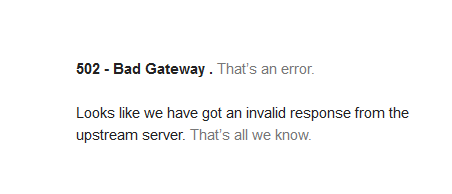

| Ник | Пост | Дата |
|---|---|---|
| YesWhy |
 | 2022-10-08T10:20:45.541Z |
| ilyaigpetrov(ilyaigpetrov) | См. https://groups.google.com/g/anticensority/c/1KVqylwUqNc. | 2022-10-08T10:32:09.000Z |
| YesWhy | Грустно конечно. | 2022-10-08T10:41:52.190Z |
| Evk(Eugene) | это всего лишь очередной dht без трекера, можно просто https://btdig.com/ использовать | 2022-10-08T18:41:56.387Z |
| YesWhy | Спасибо конечно, но няшка как раз таки не “очередной dht без трекера”. | 2022-10-09T00:32:05.778Z |
| asa193(Asa193) | Присоединяюсь к проблеме последние два дня выдаёт Bad gateway =( | 2022-10-09T16:28:55.419Z |
| Mor9(Mor9) | Bad gateway 502, подтверждаю (( | 2022-10-11T19:23:46.264Z |
| ValdikSS | Сайт блокирует прокси-серверы проекта. Ранее я связывался с администрацией сайта с просьбой о внесении прокси-серверов в белый список, на что получил отказ, также попытался восстановить работу перераспределением трафика через рабочие серверы, которые теперь также заблокированы. | 2022-10-12T08:04:56.940Z |
| ortega911 | Что интересно, с телефона нормально заходит, но не с компа. | 2022-10-13T06:56:11.720Z |
| asa193(Asa193) | Проблема ушла сама собой. Если вы это сделали, то спасибо=) | 2022-10-31T07:37:17.884Z |
| YesWhy | У меня всё по прежнему. | 2022-10-31T08:43:27.509Z |
| ilyaigpetrov(ilyaigpetrov) | В наших решениях используется не один прокси, а несколько. | 2022-10-31T09:00:48.000Z |
| Justaway | Няха опять стала душить прокси? Антизапрет выдаёт 502, GoodbyeDPI 504. | 2023-03-09T19:27:28.982Z |
{kind=link}